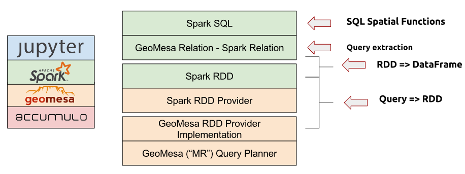

11.1. Architecture¶
GeoMesa Spark provides capabilities to run geospatial analysis jobs on the distributed, large-scale data processing engine Apache Spark. It provides interfaces for Spark to ingest and analyze geospatial data stored in GeoMesa data stores.
GeoMesa provides Spark integration at several different levels. At the lowest level
is the geomesa-spark-jts module (see Spark JTS), which contains user-defined spatial types
and functions. This module can easily be included in other projects that want to
work with geometries in Spark, as it only depends on the JTS library.
Next, the geomesa-spark-core module (see Spark Core) is an extension for Spark that takes
GeoTools Query objects as input and produces resilient distributed datasets
(RDDs) containing serialized versions of SimpleFeatures. Multiple
backends that target different types of feature stores are available,
including ones for Accumulo, HBase, FileSystem, files readable by the GeoMesa Converters library,
and any generic GeoTools DataStores.
The geomesa-spark-sql module (see SparkSQL) builds on top of the core module
to convert between RDDs and DataFrames. GeoMesa SparkSQL pushes down
filtering logic from SQL queries and converts them into GeoTools Query objects,
which are then passed to the GeoMesaSpark object provided by GeoMesa Spark Core.
Finally, bindings are provided for integration with the Spark Python API. See GeoMesa PySpark for details.
A stack composed of a distributed data store such as Accumulo, GeoMesa, the GeoMesa Spark libraries, Spark, and the Jupyter interactive notebook application (see above) provides a complete large-scale geospatial data analysis platform.
See GeoMesa Spark: Basic Analysis for a tutorial on analyzing data with GeoMesa Spark.